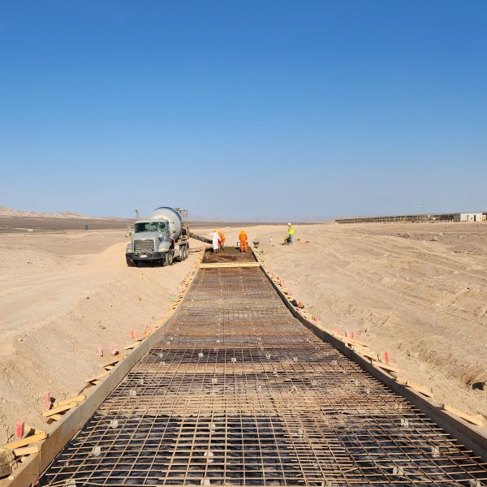
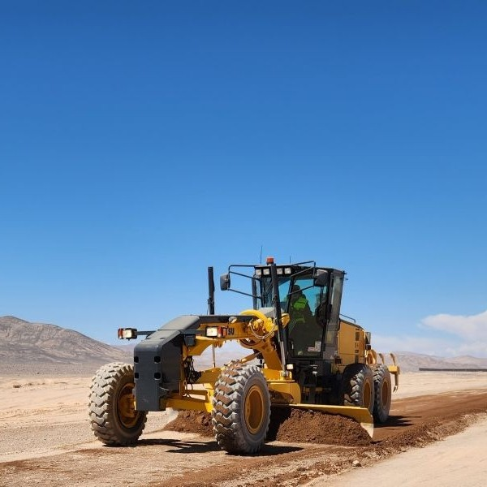
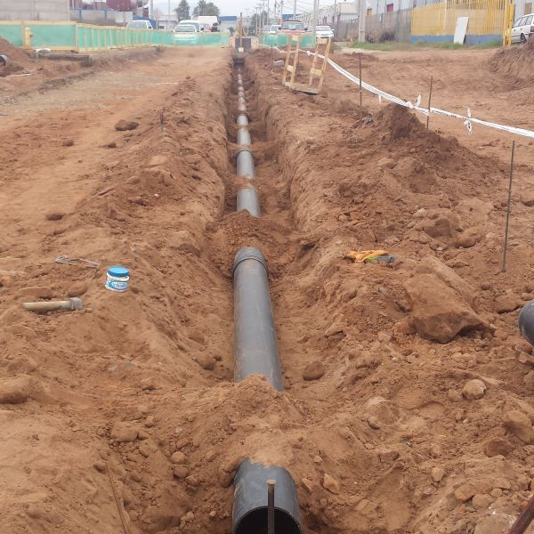
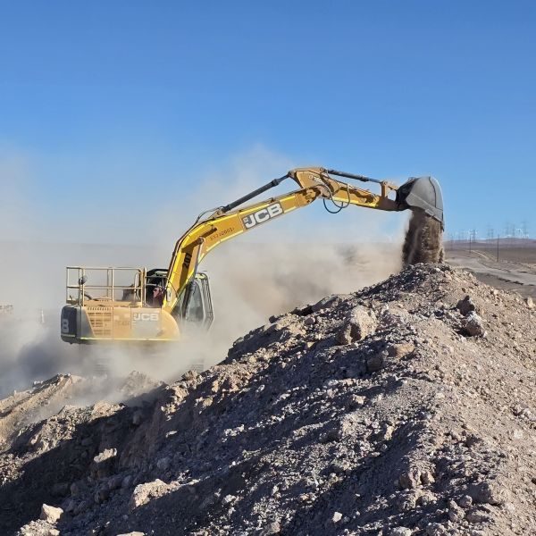
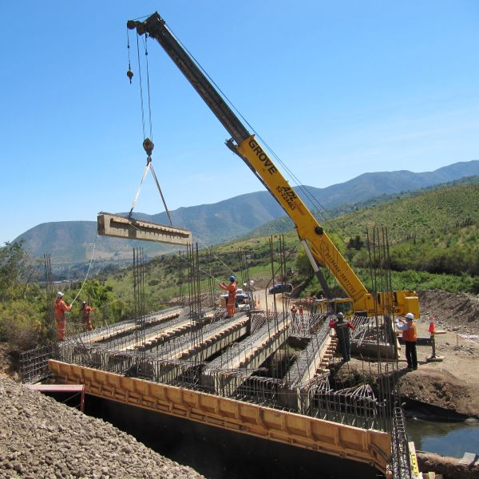
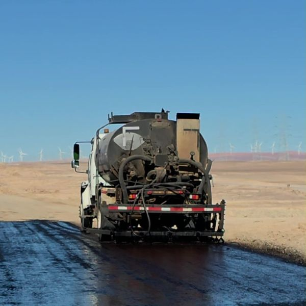

Obras civiles y pavimentos asfálticos para clientes públicos y privados, con una relación de confianza y seriedad.
Escríbenos tu proyectoPaso Alto es una empresa de desarrollo de proyectos de ingeniería y construcción, con dieciséis años de experiencia en obras de variada especialización. Su compromiso es un servicio personalizado, acorde a cada necesidad en calidad, costo y plazo, con altos estándares de calidad, seguridad y resguardo del medio ambiente.






Hamlet 4145, Las Condes
Realizamos obras en todo Chile.